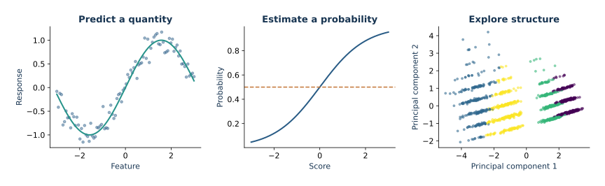

01
Regresión
Proyección, riesgo empírico y predicción
Abrir lección →Versión en español. El código, los datos, las salidas calculadas y las etiquetas dentro de las figuras se conservan en su idioma original. Los cuadernos descargables están en inglés.
Convierte el álgebra lineal, la probabilidad y la optimización en modelos que funcionan. Sigue cada idea matemática hasta su implementación en Python legible, pruébala con datos y comprende qué significa realmente el resultado.
Explora los experimentos: gráficas, tablas y resultados calculados →

minimize empirical riskProyección, verosimilitud,
regularización.
pipeline.fit(X, y)Modelos lineales, árboles,
texto y grupos.
evaluate on held-out dataFuga de información, incertidumbre,
costos y cambios de distribución.
Una ruta conceptual. Cada lección hace explícitos el objetivo, la implementación y la evaluación.
Ya sabes razonar sobre una ecuación. Aquí aprendes a convertir ese razonamiento en un experimento confiable.
Deriva el objetivo y conecta sus supuestos con las cantidades que calcula el código.
Sigue ejemplos comentados, examina las opciones del software y conecta los cambios de parámetros con las matemáticas.
Compara modelos de referencia, elige métricas y distingue una buena puntuación de un modelo útil.
Proyección, riesgo empírico y predicción
Abrir lección →
Verosimilitud, probabilidades y decisiones
Abrir lección →
Árboles aditivos y optimización de segundo orden
Abrir lección →
Eventos raros, precisión–exhaustividad y costo de alertas
Abrir lección →
Vectores dispersos, variables de lenguaje y evaluación por grupos
Abrir lección →
Centroides, componentes principales y segmentación de clientes
Abrir lección →
Información retardada y predicción con origen móvil
Abrir lección →
Entrenamiento reproducible e inferencia validada
Abrir lección →No hay lecciones coincidentes. Prueba un término más general.
Los datos proceden de ecuaciones documentadas. Compara lo que aprende el modelo con el mecanismo que generó las observaciones y explica hasta dónde llegan tus conclusiones.
Explorar el proyecto del curso →